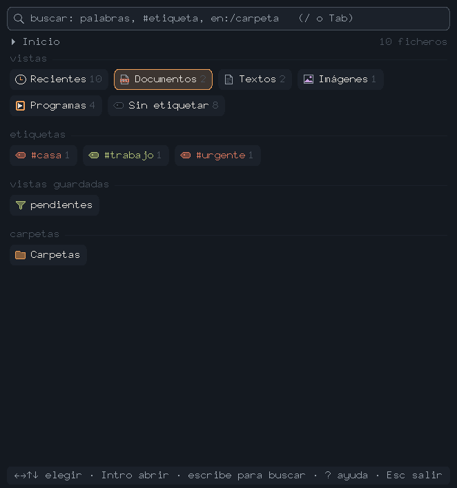
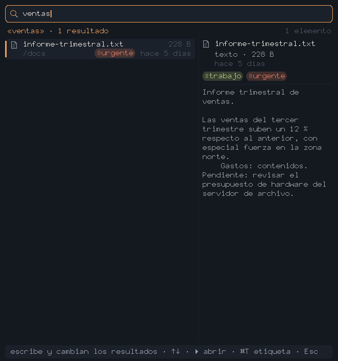
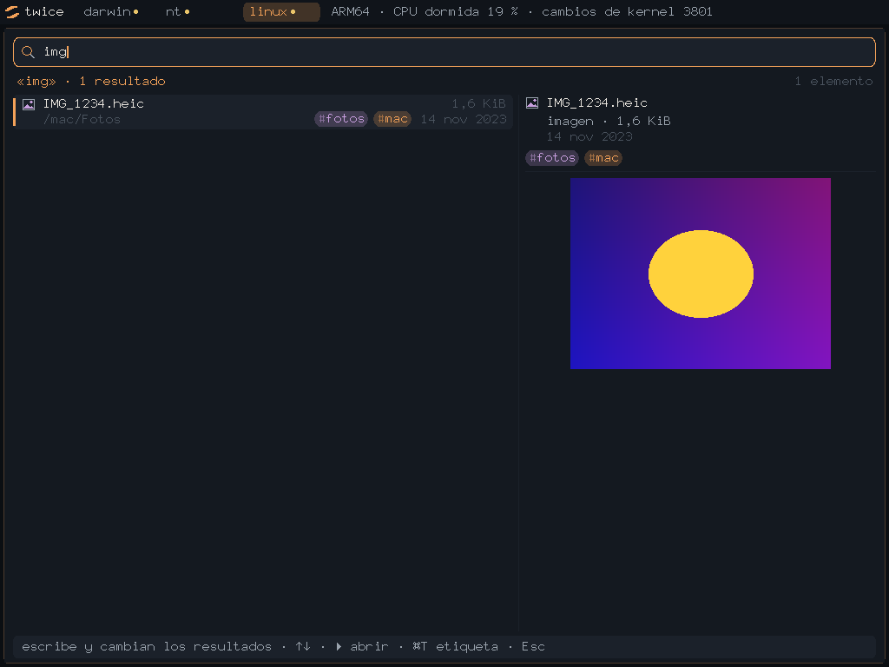

La mayoría de buscadores que trae tu ordenador miran un índice que no controlas. Twice hace lo contrario: es un sistema operativo entero —escrito desde cero, sin una sola librería de terceros— que se dedica a una cosa, encontrar tus archivos al instante, y a hacerlo en local, sin que nada salga de tu ordenador. Abres la app y entra directo al buscador. Sin cuentas, sin nube, sin terminal.
Lo que engancha no es solo que busque, es lo rápido que responde: Twice encuentra entre miles de archivos en milisegundos, mientras escribes, sin esperas ni un "indexando…" cada vez. Donde el Mac se piensa la respuesta —y a veces tardas tanto que desistes— aquí sale al instante.
Twice no es una app de Mac portada a Windows: es el mismo sistema operativo, el mismo binario. Por dentro es ARM64, así que en un PC se ejecuta emulado —y aun así encuentra tus archivos al instante, porque lo caro de buscar no es la CPU, es el índice.
Probado en Windows 10 y 11 de 64 bits, desde un portátil de hace más de diez años hasta equipos actuales. No hace falta tarjeta gráfica ni activar la virtualización en la BIOS: cuanto más rápida sea la CPU, más suave va.
La primera vez, Windows avisará: «Windows protegió su PC — Editor desconocido». Es lo que sale con cualquier programa que no lleve un certificado de firma, que cuesta unos cientos de euros al año; Twice todavía no lo tiene. Para continuar: Más información y luego Ejecutar de todas formas. Si prefieres comprobar por tu cuenta que el fichero es el mío y nadie lo ha tocado por el camino, este es su SHA-256 —en PowerShell, Get-FileHash twice-setup.exe:
fcb224bf077838c294531a4073ae6c3083585763d62ec90209e315d3cad4758c



Esto lo hice en unas 17 horas, solo, y sin depender de nada externo: hipervisor, tres kernels, cargadores de Mach-O, PE y ELF, sistema de ficheros con índice propio y empaquetado para macOS. Si tu equipo necesita a alguien que baje a este nivel —Rust, sistemas, rendimiento, on-device— y que además entregue producto, hablemos.